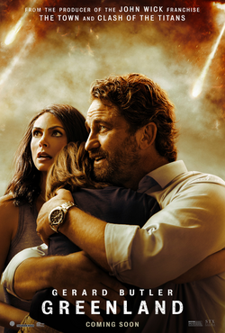

|
|
 | |
|

Po the panda (Jack Black) works in his family's noodle shop and dreams of becoming a kung-fu master. His dream becomes a reality when, unexpectedly, he must fulfill an ancient prophecy and study the skills with his idols, the Furious Five. Po needs all the wisdom, strength and ability he can muster to protect his people from an evil snow leopard.
back to top
The frozen wasteland of Antarctica serves as the background for a tale about the bonds of friendship and loyalty. Three members of a scientific expedition, Jerry Shepard (Paul Walker), his friend Cooper (Jason Biggs) and an American geologist (Bruce Greenwood), must leave their beloved sled dogs behind after a devastating accident and increasingly perilous weather conditions. Alone, the dogs struggle to survive the harsh Antarctic winter.
back to topJohn Garrity, his estranged wife and their young son embark on a perilous journey to find sanctuary as a planet-killing comet hurtles toward Earth. Amid terrifying accounts of cities getting leveled, the Garrity's experience the best and worst in humanity. As the countdown to the global apocalypse approaches zero, their incredible trek culminates in a desperate and last-minute flight to a possible safe haven.
back to top
After more than thirty years of service as one of the Navy’s top aviators, Pete “Maverick” Mitchell (Tom Cruise) is where he belongs, pushing the envelope as a courageous test pilot and dodging the advancement in rank that would ground him. When he finds himself training a detachment of Top Gun graduates for a specialized mission the likes of which no living pilot has ever seen, Maverick encounters Lt. Bradley Bradshaw (Miles Teller), call sign: “Rooster,” the son of Maverick’s late friend and Radar Intercept Officer Lt. Nick Bradshaw, aka “Goose”. Facing an uncertain future and confronting the ghosts of his past, Maverick is drawn into a confrontation with his own deepest fears, culminating in a mission that demands the ultimate sacrifice from those who will be chosen to fly it.
back to top
This fall, everyone's favorite leche-loving, swashbuckling, fear-defying feline returns. For the first time in more than a decade, DreamWorks Animation presents a new adventure in the Shrek universe as daring outlaw Puss in Boots discovers that his passion for peril and disregard for safety have taken their toll. Puss has burned through eight of his nine lives, though he lost count along the way. Getting those lives back will send Puss in Boots on his grandest quest yet. Academy Award® nominee Antonio Banderas returns as the voice of the notorious PiB as he embarks on an epic journey into the Black Forest to find the mythical Wishing Star and restore his lost lives. But with only one life left, Puss will have to humble himself and ask for help from his former partner and nemesis: the captivating Kitty Soft Paws (Oscar® nominee Salma Hayek). In their quest, Puss and Kitty will be aided--against their better judgment--by a ratty, chatty, relentlessly cheerful mutt, Perro (Harvey Guillén, What We Do in the Shadows). Together, our trio of heroes will have to stay one step ahead of Goldilocks (Oscar® nominee Florence Pugh, Black Widow) and the Three Bears Crime Family, "Big" Jack Horner (Emmy winner John Mulaney, Big Mouth) and terrifying bounty hunter, The Big Bad Wolf (Wagner Moura, Narcos).
back to top